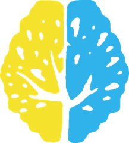

El cuerpo
Cómo nos sentimos, descansamos y cuidamos. El bienestar también pasa por el cuerpo.

T.E.TTu Espacio de Talento WhatsAppT.E.T Tu Espacio de Talento
Un espacio de formación para crecer en lo personal y en lo profesional, coordinado por Vanina Valeria Alanís, psicóloga social.
“Amate tanto que elijas tu paz mental.”
01 · La mirada
Cómo nos sentimos, descansamos y cuidamos. El bienestar también pasa por el cuerpo.
Emociones, pensamientos y la forma en que cada uno atraviesa lo que le pasa.
Familia, trabajo, grupo y comunidad. Aprendemos con otros y en ronda.
02 · Propuestas
Elegí el formato que mejor se adapta a vos, a tu equipo o a tu institución. Las próximas fechas se consultan por WhatsApp.
03 · Quién soy
Soy psicóloga social y creé T.E.T, Tu Espacio de Talento: un espacio de formación y capacitación con mirada bio-psico-social, donde brindamos talleres, cursos, capacitaciones y seminarios.
También me vas a encontrar en S.I.C.A.G. Radio, mi radio online, y en mis redes, donde comparto contenido sobre salud mental y bienestar.
04 · Inscripción
Contanos qué buscás y te llega a Vanina por WhatsApp, ordenado. Ella te responde con fechas, modalidad y valores.